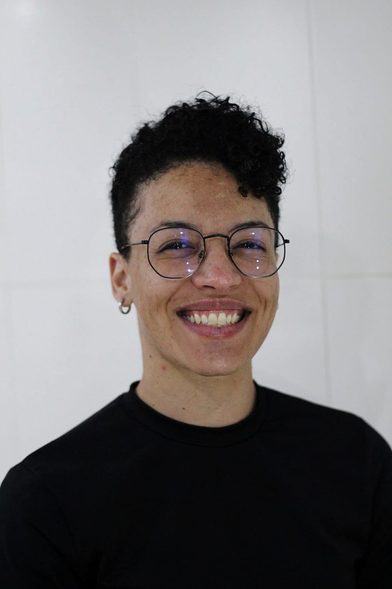
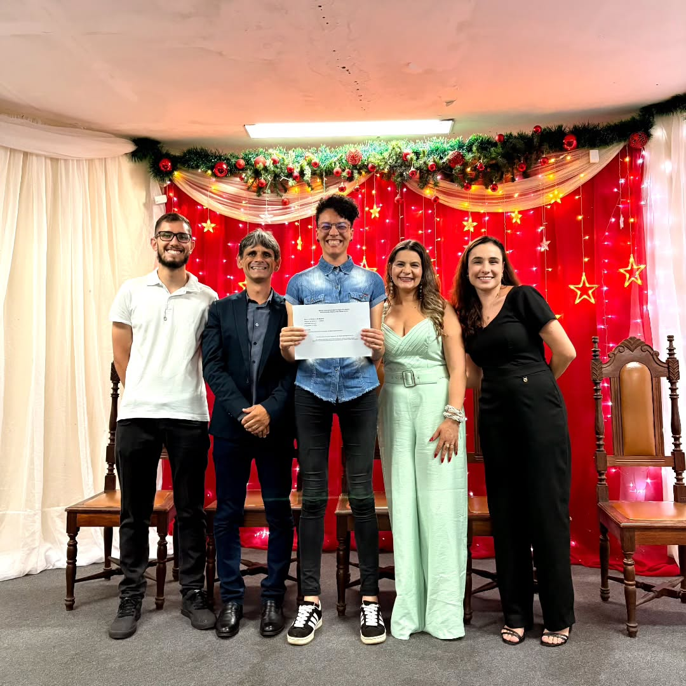

Permita-me apresentar-me...
Espero que você tenha lido esse título me imaginando de smoking segurando uma taça de champanhe (existe smoking feminino?). Não aceito menos que isso!
Bem, eu sou a Dayane, mas pode me chamar de Day. No exato momento em que vos escrevo, estou na marca dos 29 anos e 4 meses. Já aviso, de antemão, que vou arredondar minha idade para 30 para dar mais peso e emoção à minha história, afinal, uma mulher de 29 anos é só uma mocinha frágil e indefesa no auge da sua adolescência, mas uma mulher de 30 anos é uma mulher vivida, uma deusa, uma louca, uma feiticeira... uma mulher demais!
Além de alta, linda, cheirosa, inteligente, gente boa e modesta, eu sou... estudante de TI. Pois é, meus amigos, quem diria? Esse é, sem dúvidas, um daqueles cuspes que eu dei pra cima e que caiu bem no meio da minha cara! Como diria um sábio pensador comtemporâneo, vulgo Justin Bieber: "Never say never!".
Ah! E preciso dizer que eu falo pra caramba? Imaginei que não mesmo.
Pois é! Essa sou eu.

Minhas redes e links
Como eu fui parar na TI?
Tudo começou com um curso grátis do Senac...
Era uma tarde comum e estava eu scrollando o feed do Instagram quando, de repente, me deparo com um post da prefeitura da minha cidade. Normalmente eu só arrastaria pra cima e passaria batido, mas na imagem em questão algo chamou minha atenção: as palavras "curso" e "gratuito" estavam na mesma frase.
Sendo eu uma pessoa nem tão comum quanto aquela tarde que ama aprender coisas novas pelo simples fato de aprender mesmo, pensei: "hm, deixa eu dar uma olhada nisso". Abri o post pra saber mais informações e vi que os cursos eram da área de informática. Isso foi um balde de água fria! Apesar de eu ser uma pessoa que sempre teve facilidade com tecnologia e com alguns certificados de cursos de informática feitos na adolescência (Windows XP mandou lembrança!), essa era uma área que, definitivamente, eu não tinha o menor interesse em trabalhar. Os cursos que eu tinha feito, os fiz porque cursos de informática na época eram como o inglês hoje em dia - o mínimo para o mercado de trabalho. Eu pensava que trabalhar com TI era coisa de nerd e eu não considero que eu seja uma dessas pessoas. Então, depois de analisar, resolvi que não iria fazer e continuei arrastando pra cima à procura de memes que me rendessem boas risadas.
Mas, por coincidência ou não, uma prima minha que trabalha na prefeitura me enviou o mesmo post seguido de um "Dada, a prefeitura fez uma parceria com o Senac e estão tentando trazer alguns cursos grátis aqui pra cidade, mas pra isso eles precisam do apoio da população e como eu sei que você gosta de fazer cursos te mandei pra você ver". Eu comentei que já tinha visto no Insta e que eu não tinha ficado interessada e tal... mas, depois de saber que se não formasse turma os cursos não poderiam ser ofertados, eu decidi fazer só pra exercitar meu cérebro mesmo.
Pois bem, voltei a olhar a foto com os cursos oferecidos e pensei: "eu vou fazer o curso que eu menos sei a respeito pra forçar meu cérebro a aprender algo totalmente novo". Porém, a maioria dos cursos eu já tinha tido contato, mas um deles eu nunca nem tinha ouvido falar: Lógica de Programação. Eu olhei pra tela do celular e pensei: "que negócio é esse, gente?", pesquisei no Google o que era e não entendi nada. Daí eu falei: "é esse!".
No outro dia, lá estava eu, na prefeitura, plena com meus documentos em mãos realizando minha inscrição. Deu tudo certo. Aí era só esperar o dia das aulas começarem e ir com Deus.
Enfim, chegou o grande dia. Era uma segunda-feira chuvosa, dia 22 de setembro de 2025. O primeiro dia foi aquele clichê de início de curso. O coordenador apresentou a estrutura do curso e tal e depois pediu para cada um dizer o nome e o motivo de estar ali. Imagine que as cadeiras da sala estavam dispostas como um "u". As apresentações começaram em uma ponta e eu estava sentada na outra, ou seja, eu seria a última a se apresentar. Alguns foram falando que estavam lá pois queriam fazer transição de carreira, outros porque queriam iniciar uma carreira na TI e blá blá blá. Quando chegou a minha vez eu me apresentei exatamente assim: "Olá! Eu sou a Dayane. Tenho 28 anos e estou fazendo esse curso por dois motivos: primeiro, porque é de graça e segundo porque eu quero exercitar meu cérebro. Eu não tenho interesse em seguir carreira nessa área, só quero aprender uma coisa nova." Eles riram. Acho que não estavam preparados para a minha sinceridade. Depois disso, a gente fez um exercício em grupo e no outro dia o professor iria iniciar o conteúdo do curso propriamente dito.
Algoritmo e a virada de chave
O professor começou o conteúdo com o básico da Lógica de Programação: algoritmo! Ele projetou essa palavra na tela, apontou pra um dos colegas e disse: "Suponha que você precise trocar uma lâmpada (clássico! kkk), o que você faria?". O rapaz começou a falar e, obviamente, esqueceu de citar vários passos importantes que a gente faz no automático, por isso nem lembramos de dizer. Isso nos rendeu boas risadas! À medida que o professor ia citando os furos no passo a passo dele, eu fui entendendo o que ele pretendia que fosse feito. Tinha que ser passado todos os passos, tintim por tintim. Enquanto eu estava pensando nisso, ele virou pra mim e disse: "Fala quais são os passos necessários pra fazer um hambúrguer". Eu respondi: "Seria hambúrguer de quê?". Aí ele já deu uma risada e falou que o caminho era esse mesmo. Respondeu e eu prossegui dando todos os passos que eu imaginava. Por fim, ele me parabenizou dizendo que foi um ótimo exemplo de algoritmo e, a partir dali, iniciou a explicação da matéria.
Eu saí daquela aula extremamente empolgada. Não simplesmente porque tinha aprendido o conceito de algoritmo, mas porque na hora que eu fui entendendo o que era eu pensei: "É assim que a minha cabeça funciona!". Sim. Minha cabeça funciona em passo a passo e isso era uma coisa que eu nunca tinha conseguido definir completamente. Eu dizia que eu sentia como se minha mente tivesse várias caixinhas com coisas guardadas, mas que eu só conseguia abrir uma caixinha por vez. Para você ter uma ideia, quando eu comecei a aprender a cozinhar, na minha adolescência, eu fazia primeiro o arroz e ficava na beira do fogão esperando terminar, depois eu fazia o feijão, depois as outras coisas. Uma coisa por vez. Se não fosse assim, eu queimava um ou outro, ou todos! Hoje em dia, eu melhorei bastante nesse aspecto. Mas até chegar nesse ponto, tive bugs para dar, vender, emprestar e jogar fora! (De vez em quando ainda acontece, mas ninguém precisa saber disso...).
Fato é que, a partir daquela aula, eu fui me apaixonando por aquilo. Eu chegava em casa, relia o material, fazia os exercícios, anotava as dúvidas... enfim, eu realmente estava empolgada! A virada de chave ocorreu quando ainda na primeira semana de aula o professor me perguntou se eu já tinha feito curso de programação ou já tinha trabalhado na área e eu respondi que não, que ali era o meu primeiro contato com esse universo. Ele fez um cara de espanto e soltou um: "Porra!". Ali, naquele momento, eu percebi que eu tinha potencial. E a partir daquele dia, eu decidi que iria continuar estudando programação até onde eu conseguisse.
Eu terminei aquele curso em uma sexta-feira calorenta com um céu estrelado, dia 17 de outubro de 2025. Ao final do curso, eu já tinha decidido que queria seguir carreira na área de TI. E eu estava feliz por ter concluído o meu primeiro passo dessa jornada. Eu nunca vou conseguir expressar em palavras tamanha gratidão por aprender tanto em tão pouco tempo. Sou grata ao Senac MG, à prefeitura de Carandaí-MG, à minha prima Gislene que me enviou aquela mensagem, ao professor Vitor por passar o conhecimento de forma tão simples e eficiente (ele é muito fera!) e aos colegas pela companhia e aprendizado mútuo.
Interessante que escrevendo isso após um ano, eu vejo como a vida é imprevisível. E como isso pode ser incrível. Naquela noite chuvosa de uma segunda-feira, eu entrei naquela sala de aula com um único objetivo: aprender algo novo. E, a partir daquele dia, um mundo novo abriu-se para mim. A TI me encontrou.

E o que aconteceu depois?
Me acompanhe pra saber...